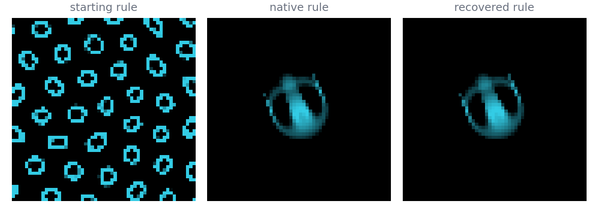
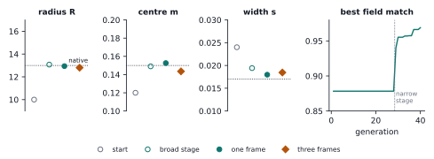
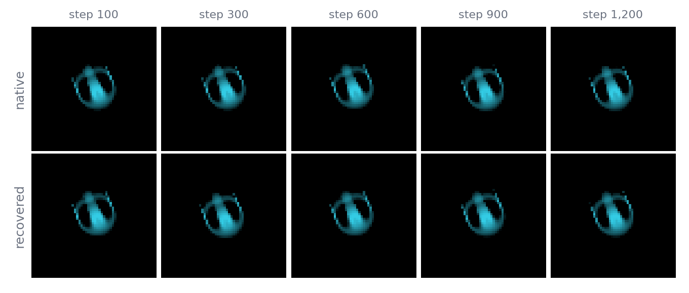
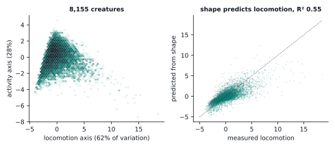
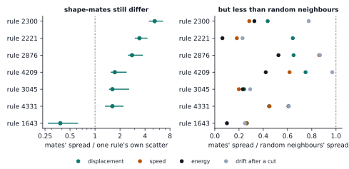
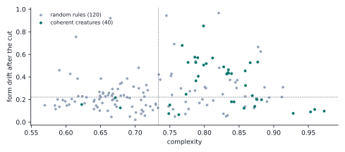

Orbium is a crescent in Lenia, a grid of values in which every cell sums its neighbours over a ring and grows or fades depending on that sum. At every step the update raises the values at the crescent’s leading edge and lowers those at its trailing edge, so the crescent glides about two thirds of a cell per step although nothing on the grid moves, and its shape lasts only as long as the rule keeps rebuilding it. We fixed every part of Orbium’s rule except three numbers, how far the ring reaches, the sum at which a cell grows fastest and how far the sum may stray before growth turns to fading, and gave an evolution strategy Orbium’s starting cells and one snapshot of the creature at step 600. Scoring 3,840 candidate rules by how well their grown field matched that snapshot, it returned all three numbers within 0.5, 1.7 and 5.9 percent of Orbium’s, and the creature they grow keeps its shape and glides on the same heading at the same speed through step 1,200, twice as long as the search looked. A creature we invent comes with only a picture, so we asked across 8,155 Flow Lenia creatures what a picture says about behaviour. Size and elongation explain about half of how far and how fast a creature travels. Creatures that look the same but grow under different rules travel and heal differently, by more than one rule varies from one start to the next, and a more intricate body heals a cut no better. A snapshot pins down a rule only when the starting cells and the rest of the rule are handed over.
Picture a grid of numbers between zero and one, drawn as shades of grey. At every step each cell looks at the cells in a ring around it, adds them up with smooth weights, and grows if that sum lands near a preferred value and fades if it strays too far. This is Lenia, a continuous cousin of Conway’s Game of Life [1][1]B. W.-C. Chan, “Lenia: Biology of artificial life,” Complex Systems, vol. 28, no. 3, pp. 251–286, 2019, doi: 10.25088/ComplexSystems.28.3.251., and its best-known creature is OrbiumA Lenia creature first described by Chan: a crescent-shaped body about twenty cells across that glides in a straight line because each update raises the values at its leading edge and lowers those at its trailing edge, so its shape lasts only as long as its rule keeps rebuilding it., a crescent about twenty cells across that glides in a straight line at about two thirds of a cell per step. No cell travels with it. Cells ahead of the crescent fill in and cells behind it empty out, so what you see at any moment is fresh material in the old arrangement, and the creature lasts only as long as the rule keeps rebuilding it.
So here is a puzzle to try before reading on. Everything about Orbium’s rule is fixed except three numbers: how far the ring reaches, the sum at which a cell grows fastest, and how far the sum may stray before growth turns to fading. Someone shows you a single snapshot of Orbium at step 600, gives you the cells it started from, and hides those three numbers. Could you work them out from the picture? Most settings grow nothing at all, or a smear, or a lattice of rings, and the snapshot is one moment of a creature that never stops changing.
We handed the puzzle to an evolution strategy, a search that proposes a batch of settings, grows each one from Orbium’s starting cells, keeps the settings whose field at step 600 overlaps the snapshot best, and proposes the next batch around them. After 3,840 grown candidates it returned a reach of 12.94 cells against Orbium’s 13, a growth centre of 0.153 against 0.150 and a width of 0.018 against 0.017. The creature these numbers grow keeps its shape and glides on the same heading at the same speed through step 1,200, twice as long as the search ever looked.
That worked because we handed over Orbium’s starting cells and every part of its rule but three numbers. If you invented a creature yourself, a picture would be all you had, so we asked what a picture of a creature says about how it behaves, using thousands of creatures from Flow Lenia, a version of Lenia in which stuff flows from cell to cell instead of appearing and vanishing. A creature’s size and outline settle about half of how it travels. Two creatures that look the same but grow under different rules still travel and heal differently, and for some of those differences nothing in the body gives them away. A more intricate body, which you might expect to have more to rebuild from, is no better at healing a cut.
A snapshot pins down a rule when everything else is handed over, and says much less once it is not. To ask for a creature that lasts, you have to ask for its healing as well as its looks, and the next search will have to find the starting patch along with the rule.
1One snapshot of Orbium was enough to work out its rule
Orbium’s rule has three dials. The radius RThe kernel radius: how far, in cells, a cell’s neighbourhood reaches. Orbium’s native value is 13. sets how far each cell looks, the growth centre mThe growth centre: the neighbourhood density at which a cell grows fastest. Orbium’s native value is 0.15. sets the neighbourhood sum at which a cell grows fastest, and the growth width sThe growth width: how far the neighbourhood density can stray from m before growth turns into decay. Orbium’s native value is 0.017. sets how far that sum can stray before growth turns into fading. Orbium needs R = 13, m = 0.150 and s = 0.017. We gave a search the update law, the ring-shaped neighbourhood, the growth function and Orbium’s starting cells, hid the three dials, and it returned R = 12.94, m = 0.1526 and s = 0.0180, off by 0.5, 1.7 and 5.9 percent.

The search guessed settings in rounds of 96, grew each guess from the same starting cells for 600 steps, scored how closely the grown field matched Orbium’s at step 600, and guessed again around the best. The score is the field matchOne minus half the summed absolute difference between the candidate’s mass field and the reference, both scaled to unit mass and aligned at their centres of mass, minus small penalties for differences in total mass and in the number of occupied cells. A perfect match scores 1., which centres both fields on their mass and counts how much of that mass overlaps, so 1 is a perfect copy. The search started from R = 10, m = 0.12 and s = 0.024, a rule that breaks the seed into rings, and ran 28 broad rounds over R from 9 to 17, m from 0.1 to 0.2 and s from 0.01 to 0.03, then 12 narrow rounds around the winner, 3,840 grown guesses in all. The broad rounds already put the radius and the growth centre close. The narrow rounds raised the match from 0.878 to 0.969, mostly by pulling the width in from 0.0194.

The creature the recovered rule grows is a working Orbium. It keeps its shape through step 1,200, twice as long as the search ever looked, and it glides like the original: between steps 100 and 1,200 it covers 716 cells against Orbium’s 706, both in straight lines on the same heading, at about 0.64 cells per step, a distance of nearly four widths of their 192-cell world.

More of the creature’s history made the answer worse. A second search scored on snapshots at steps 100, 300 and 600, with the same two-stage budget, returned R = 12.80, m = 0.1435 and s = 0.0185, each farther from Orbium’s value than the single-snapshot answer, although its creature also kept its shape through step 1,200. This is one creature and one comparison, so it shows only that here the two earlier snapshots gave the search nothing it could use.
When you know every part of the rule but three numbers and where the creature began, one picture of the grown creature is enough to recover the rule, and the rule you recover keeps the creature going past the moment you checked. A creature we invent comes with none of that handed over.
2A creature’s size and outline decide about half of how it travels
Flow Lenia changes one thing about Lenia that matters here: the total amount of stuff on the grid never changes, so instead of cells filling and emptying, mass streams from cell to cell along currents that the mass itself sets up [2][2]E. Plantec, G. Hamon, M. Etcheverry, P.-Y. Oudeyer, C. Moulin-Frier, and B. W.-C. Chan, “Flow-Lenia: Towards open-ended evolution in cellular automata through mass conservation and parameter localization.” arXiv preprint 2212.07906, 2022. doi: 10.48550/arXiv.2212.07906.. Its creatures glide, spin, pulse and tear apart. If you knew only what one of them looks like, how big it is, how stretched out and whether it is in pieces, how well could you guess how far and how fast it goes? About halfway. Across 8,155 creatures, eight measurements of their shape account for a little over half of the differences in how far they travel and how fast (53 percent of each), and for even more of how much their insides churn from step to step (74 percent).
The creatures come from one screen of 8,192 random rules in which two interacting channels, which you can picture as two inks, act on each other through ten neighbourhood shapes [3][3]B. W.-C. Chan, “Lenia and expanded universe,” in Proceedings of the 2020 conference on artificial life (ALIFE 2020), MIT Press, 2020, pp. 221–229. doi: 10.1162/isal_a_00297.. We measured six behaviours for each creature: speed, path length, displacement, centre velocity, temporal variance (how much the field changes from step to step) and energy. Most of their variation lies along two directions. The first, locomotionThe first principal axis of the six behaviour measurements, dominated by path length, displacement and centre velocity. It holds 62 percent of the behavioural variation., is mostly how far a creature goes, and the second, activityThe second principal axis of the six behaviour measurements, dominated by how much the field changes over time (its temporal variance) and its energy. It holds 28 percent of the behavioural variation., is mostly how much it churns; together they hold 90 percent of the variation.

A straight-line fit on the eight shape measurementsRadius of gyration, occupancy, mean mass, the number of separate pieces, the largest piece’s share of mass and its elongation, and two moment measures of density and elongation, each standardized across the creatures. explains 61 percent of the variation in activity and 55 percent in locomotion (R² 0.610 and 0.552), against 16 percent for the third direction, how winding a creature’s path is. Size and elongation do most of the work: each on its own explains about a third of the variation in path length, and all eight together explain 45 percent of displacement. Across all 112 screens of the same harvest, four kinds of rule with 8,192 random rules each, the medians are somewhat lower in the same order (45 percent for path length, 40 for speed, 36 for displacement and 73 for temporal variance). These are in-sampleThe linear fit is scored on the same creatures it was fitted to. With eight predictors and thousands of creatures the optimism is small, but a fit on held-out bodies is the stronger test. fits, scored on the creatures they were fitted to.
Draw a creature’s size and outline and you have already decided about half of how it will travel. The other half, where any unusual gait would have to come from, is invisible in the outline, so a search that only checks the picture has no reason to find it.
3Look-alike creatures grown by different rules still travel and heal differently
Half is an average over thousands of creatures that look nothing alike, so it leaves the sharper question open: if two creatures look the same, do they behave the same? Mostly not. We collected families of look-alikes grown by different rules, and in six of seven families the look-alikes differ in how they travel and how they heal after a cut, by more than one rule’s own creatures differ from each other. They still behave more alike than creatures grown by random rules nearby.
To build a family we started from one Flow Lenia creature and its rule, nudged the rule’s numbers in many directions, and kept only the nudged rules whose creature looks like the original as closely as a tiny random nudge would leave it. From each family we kept the 48 shape-matesRules that grow the starting rule’s shape to within the smallest shape change a tiny random change of that rule produces. Each starting rule has 48 of them, chosen as far apart from each other as the search allowed. whose rules lie farthest apart. These rules are simpler than the screen above, with one ink and three neighbourhood shapes. Every mate was grown from the same eight starting blobs for 1,600 steps, once left alone and once with its centre cut out at step 800, and we measured how far and how fast it went, how much energy its field held and how far its body drifted from the uncut copy after the cut. One rule grown from different blobs already gives slightly different creatures, so the yardstick is that rule’s own scatterHow much one rule’s behaviour varies when the same rule is grown from different starting fields, measured over 64 fields and scaled to the eight fields each shape-mate was grown from. over 64 blobs.
The 48 mates of rule 2300 differ in behaviour by 5.2 times that scatter, and the other families with a clear answer lie between 1.6 and 5.2 times. The exception is rule 1643, where tiny nudges of the rule barely change the creature at all; its mates differ by less than one rule varies on its own. An eighth family, around rule 3029, yielded too few look-alikes to measure. For comparison each mate was paired with a rule nudged the same distance in a random direction with no requirement on its look, and in every behaviour of every family the mates spread less than these neighbours, between 0.06 and 0.97 times as much (median 0.43). Looking alike narrows behaviour without fixing it.

Where the differences come from depends on the behaviour. Energy follows the body. Look-alikes are never perfect copies, and at five of the seven families twelve shape descriptors measured on four of the blobs predict 55 to 91 percent of the mates’ energy differences on the other four. Speed and healing do not follow the body. The speeds of rule 2300’s mates repeat from one blob to the next as reliably as their energies, yet no description of the body we have, its outline or its interior, predicts more than a quarter of them. Around rule 2221, how far each mate drifts after the cut repeats almost exactly across blobs (a correlation of 0.96 between two halves of them), nothing in the body predicts any of it, and the direction the mate’s rule was nudged in predicts 64 percent.
Over whole kinds of rule, looking alike says even less about the rule. Among a quarter of a million random rules of each of four kinds, two- and three-ink rules with ten to twenty neighbourhood shapes, the creatures that look most alike come from rules almost exactly as far apart as two rules picked at random (0.997 to 0.999 of the random distance), about one percent of the closeness the sample allows.
Two rules can grow the same-looking creature and make it travel or heal differently, and for some of those differences the body shows nothing while the rule’s numbers predict them. A picture of the creature leaves that part of the rule unwritten.
4A more intricate body is no better at healing a cut
Cut a hole in the middle of a creature and watch whether it comes back. It seems natural to guess that a more elaborate body, with more structure left to rebuild from, would recover better, and across 160 Flow Lenia creatures it does not: what little link there is points the other way.
The 160 are three-ink rules with fifteen neighbourhood shapes, 40 creatures that hold together and 120 grown by random rules, all from the same starting patch. At step 400 we cleared a 40 by 40 square at the centre of each, and by step 1,000 we measured how far it had ended up from an uncut twin in how many cells it occupies, how spread out it is and how much of its mass sits in its largest piece, which we call form driftThe mean relative difference between the cut creature and an undamaged copy in occupancy, radius of gyration and the largest piece’s share of mass, over the steps from the cut at 400 to step 1,000. Zero means the cut left no trace on these measures.. We scored how intricate each body is by how badly its picture compresses, since a smooth blob compresses well and a body full of filaments and holes does not, and call that complexityHow poorly the body’s mass map compresses: the compressed size of the image relative to its raw size, averaged over four downsampling scales. Intricate bodies score high, smooth or empty ones low..

More intricate bodies drifted slightly further from their uncut twins (r = 0.16 across the 160). The creatures that hold together were more intricate than the random ones and drifted further after the cut (0.34 against 0.25 on average), and only 31 of the 160 landed in the intricate, well-healed corner.
An elaborate body is no more likely to heal. If you want a creature that survives a cut, you have to ask for that directly, by cutting it during the test that judges it.
5A snapshot leaves out where a creature starts and how it heals
Orbium’s rule came back from one snapshot because we handed over where it started and every part of its rule but three numbers, and a creature we invent arrives with neither. Its outline would settle about half of how it travels. The rest, along with how it heals, depends on which of the many rules that grow that outline the search happens to find, and how elaborate the creature looks gives no hint about the healing.
Our bet is that a search over the starting patch and the rule together can grow a creature it has seen in only one snapshot, and keep it. The test hides both the rule and the starting cells of a known creature, searches both against one snapshot of the grown body, then grows the fitted rule from new starting cells and cuts the result. The bet fails if the fitted rules reach the snapshot only from the one start they were found with, or if their creature drifts further after the cut than the original does, because then a snapshot pins down a picture and leaves the creature that should keep it unspecified.
If the bet holds, asking for a creature means handing over a picture of it and the damage it has to survive, and letting the search work out where it begins.
6A body is what its rulebook keeps rebuilding
We ask whether different kinds of systems share principles of organization: how a body takes shape, how it holds that shape and what it does when part of it is taken away. Lenia is a model organism for this because it comes with its rulebook, and this report runs the question backwards, from a body to the rulebook that grows it. For Orbium, with the seed and all but three numbers of the rule handed over, one frame of the mature body was enough, and the rulebook it gave back grows a body that keeps its shape and keeps gliding long after the frame it was read from. A body, here, is something the rulebook keeps rebuilding, and one picture of it says enough about that rebuilding to recover the rule.
The Flow Lenia creatures show how much more has to be said once nothing is handed over. Shape fixes about half of how a body travels and leaves the rest to hidden variation that a picture does not show. Look-alikes grown by different rulebooks behave more alike than bodies grown by random neighbouring rules, which suggests that shape and behaviour read some of the same combinations of the rule, but when we cut them and ask whether each body keeps its future, bodies that looked the same before the cut still answer differently. How intricate a body looks says nothing about that answer, so a request for a body that survives damage has to put the damage into the test that scores it.
7Methods
Four kinds of rule run these experiments, and each section uses one.
| Experiment | Engine | Channels | Neighbourhood kernels | Creatures |
|---|---|---|---|---|
| Orbium recovery | additive Lenia, 192 by 192 torus | 1 | 1 | Orbium, native rule Chakazul O2(a) |
| Shape and travel | Flow Lenia | 2 | 10 | 8,155 from one screen of 8,192 rules; 112 screens of four families for the medians |
| Look-alikes | Flow Lenia | 1 | 3 | 48 mates and 48 random neighbours at each of seven starting rules |
| Family-wide rule distances | Flow Lenia | 2 or 3 | 10, 20 (two channels) or 15 (three) | four families of 28 runs of 8,192 random rules |
| Damage | Flow Lenia | 3 | 15 | 40 coherent creatures and 120 random rules |
All Flow Lenia runs use the corrected engine, LeniaCLI build 060e90a71ec1 (A.1). The six behaviour measurements are mean speed, path length, displacement and centre velocity, each log-transformed, and the field’s temporal variance and energy, all standardized before the principal axes are taken; the screen’s creatures are those that passed its persistence filters. Each shape fit is an ordinary least-squares regression of one behaviour or axis on the eight standardized shape measurements, and the size and elongation groups are fitted the same way on their own subsets. The look-alike energy, speed and drift predictions are ridge regressions across the 48 mates scored on held-out fields, from the twelve shape descriptors, from a heading-free description of the body’s interior, and from both. The family-wide rule distances are measured after sorting kernels and also minimized over every kernel and channel relabelling, on 128-cell worlds grown once for 1,500 steps.
Appendix
A.1Engine correction and rerun
Earlier versions of this work reported results from Flow Lenia simulations whose spatial-derivative step computed the gradient with its sign flipped and its axes swapped, in a Python port of the simulator and in our main engine before it was fixed. Under that step the median creature broke into twelve pieces, which decoupled how bodies travelled from their shape. Those results are removed, and the shape and movement analysis and the damage experiment in this report were rerun on the corrected engine, LeniaCLI build 060e90a71ec1, with the analysis code unchanged and the harvest regenerated from the same rules and seeds. The family-wide rule-distance comparison in section 3 was computed on both engines from the same rules and seeds and gives the same ratios on each (0.997 to 0.999 of the random-pair distance), so the bug did not create the looseness between shape and rule it reports.
A.2The withdrawn specimen search
A search that tried to recover the rule of corpus specimen 2876 is withdrawn. Its batched initializer grew each candidate from a different random starting field, so the apparent improvement over generations belonged to the starting fields and not to the rules.
A.3Orbium and its replay
Orbium runs in additive Lenia, a single channel on a 192 by 192 torus, with the native rule Chakazul O2(a) from Chan’s Lenia library [1][1]B. W.-C. Chan, “Lenia: Biology of artificial life,” Complex Systems, vol. 28, no. 3, pp. 251–286, 2019, doi: 10.25088/ComplexSystems.28.3.251.. Additive Lenia has no derivative step, so the correction above does not touch it, and replaying the native, broad-stage and recovered rules on the corrected engine reproduced all 900 recorded frames byte for byte. Both searches are evolution strategies with 96 candidates per generation, 28 broad generations over R in 9 to 17, m in 0.1 to 0.2 and s in 0.01 to 0.03, then 12 narrow generations around the best candidate. The three-frame control sums the field match over steps 100, 300 and 600, so its best score of 1.08 is not comparable with the single-frame score of 0.969.
In additive Lenia the search engine recentres the field at every step: before each update it rolls the grid by the whole-cell offset of the previous state’s centre of mass from the grid centre. Every rollout in both searches, every recorded frame and the replay above ran this way, so across all 300 recorded frames of each rule the body’s centre of mass stays within 1.6 cells of the grid centre, and the figures show Orbium in its own frame. On a torus a whole-cell roll moves the body without changing how it develops, and the field match aligns centres of mass anyway, so no score or recovered rule depends on it. To measure the glide the figure script replays both rules on the CPU without the roll. With the roll the same replay matches the recorded frames to within 3 of 255 grey levels for the native rule and 7 for the recovered one, up to a one-cell difference in where the roll falls, through step 300, before round-off between the two implementations grows. Without it, between steps 100 and 1,200 native Orbium travels 706 cells and the recovered body 716, each along a path less than 0.3 cells longer than its straight-line displacement, on headings that agree to within a fifth of a degree, about 0.64 and 0.65 cells per step.
A.4Look-alike design, frozen before the runs
The eight starting rules come from the one-channel corpus behind this work, each a point in a 40-coordinate parameter box. Around each we sampled rules at distances from 0.005 to about 0.35 and accepted those whose twelve shape descriptors, averaged over four selection fields, lay within a tolerance of the starting shape. The tolerance is the median shape change produced by 24 random rule changes of size 0.005, which ranges from 0.003 standardized shape units around rule 1643 to 0.28 around rule 2876. From the accepted rules the 48 farthest apart were kept, and each was paired with a neighbour at its exact rule distance in a random direction. Rule 3029 yielded 10 acceptable rules of 1,120 screened, against a minimum of 12, and was not measured.
For each of six log behaviours (displacement, speed, tortuosity, energy, variance and form drift after the cut) the spread ratio divides the spread of the 48 mates’ eight-field means by the standard error of an eight-field mean of the starting rule, and the per-rule value is the geometric mean over the locomotion, energy and response domains. The design was frozen before the runs: a starting rule supports the conjecture that mates differ beyond scatter when the lower 95% bound exceeds 1 and falsifies it when the upper bound falls below 1.25, and a starting rule with fewer than 12 accepted mates counts as inconclusive. The plan named eight starting rules and called the conjecture supported if six of them supported it and falsified if four falsified it. Seven were measured: six support it, rule 1643 falsifies it and rule 3029 is inconclusive, so the conjecture is supported whether 3029 is left out (six of seven) or counted against it (six of eight). The frozen bootstrap resampled each mate’s fields independently although all mates share them, so the intervals shown keep the fields paired; no verdict changes.
A.5Data
Every number and figure here is produced by the report’s figure script from the recorded runs: the two-stage Orbium inverse with its configs, histories and frames, the corrected-engine shape and movement regeneration with the harvest it read, the shape-mate runs with their frozen analysis and its controls, the family-wide rule-distance analysis, and the corrected-engine damage experiment with the Orbium replay. The source manifest lists each of these files with its size and SHA-256, and the generated figures with theirs. The figure summary holds the recomputed values behind the prose: the recovered rule numbers and their errors, the explained variances and fits, the uncentred Orbium travel, the shape-mate spread ratios, and the damage correlation and counts. The Orbium inverse summary records the native, starting and recovered rules of both searches with their scores.